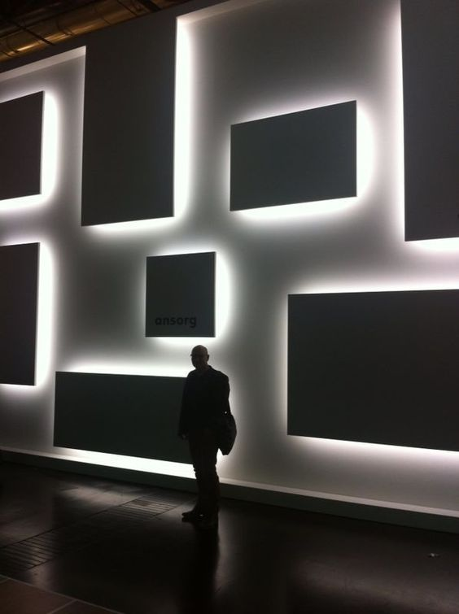

ABOUT
This experiment-oriented blog attempts to bring forth music visualization in both individual and combinational forms of lines, shapes, and colors. German musician Kontra K’s latest album Gute Nacht is set as the experimental subject for potential visual performances. Animated representations along with short text explanations are expected to convey the musical messages to a potential audience in a compelling and clear manner, which also seek to serve as promising digital prototypes for concert lighting/stage design. Ideation and working process are detailed for others’ reference. This project is mainly credited to Kontra K, Zachary Lieberman (visual artist), and Ian Reah (software developer).
BIO
Yuqi Wang, born in 1994 in Zhejiang, China. He studied Economics/Management Science at Sun Yat-sen University. Currently majors in Communication Design at Parsons School of Design, focusing on Interaction Design. With enthusiasm for music performance and German culture, he is pursuing future study experience in Lighting/Stage Design in Germany. Lives in New York City, United States.
Contact: wangy932@newschool.edu
Inspiration
Melody and lyrics are centered in pop music. Modern audiences are thus less appreciative of the instrumental, and apt to give major credits to the dominant musical part. Higher pitch of the melody and emphatic presentation of lyrics might account for this behavioral choice. Comparatively, classical music tends to offer listeners musical experience in a pure and simple form, enabling listeners to detect auditory nuances. Apparently, this approach is not the sole solution to this problem. Other responses are being made and assessed constantly. Sensory representation is widely adopted to addressing this issue. Visual and tactile reproductions can be experienced in concerts, musical festivals, and clubs. Lighting design as an intriguing implement displays its popularities and effectiveness in those environments. Interaction design as a digital approach has the potential to ameliorate the status quo in a fairly economical fashion. By mimicking the lighting effect, this project seeks to imbue viewers the notion of being aware of and appreciating instrumental music.
Thus, for this project, Gute Nacht as an appropriate musical subject is experimented. Musician Kontra K’s introduction (in German) from Genius is given below.
Kontra K (* 3. Juli 1987 in Berlin; bürgerlich Maximilian Diehn) ist ein deutscher Rapper aus Berlin. Er ist Kampfsportler, weshalb er den Kampfsport auch als Inspirationsquelle für einige seiner Lieder nimmt. Sein Ziel ist es nach eigener Aussage seine „Hörer auf den Sportfilm zu bringen“.
Mitglied bzw. ehemaliges Mitglied bei:
— Perspektiflows
— Vollkontakt
Label-Interne EPs und Sampler (DePeKa Records):
— 2009: Ein Herz aus Chrom (EP mit Skinny Al)
— 2012: Mach keine chromen Dinga (Labelsampler)
— 2013: Auf Teufel komm raus (EP mit Bonez MC)
IMPLEMENT — CONCEPT
The implement this project chiefly employs is termed Web Audio API. The following explanation from MDN details the concepts and usage of this tool.
"The Web Audio API involves handling audio operations inside an audio context, and has been designed to allow modular routing. Basic audio operations are performed with audio nodes, which are linked together to form an audio routing graph. Several sources — with different types of channel layout — are supported even within a single context. This modular design provides the flexibility to create complex audio functions with dynamic effects.
Audio nodes are linked into chains and simple webs by their inputs and outputs. They typically start with one or more sources. Sources provide arrays of sound intensities (samples) at very small timeslices, often tens of thousands of them per second. These could be either computed mathematically (such as OscillatorNode), or they can be recordings from sound/video files (like AudioBufferSourceNode and MediaElementAudioSourceNode) and audio streams (MediaStreamAudioSourceNode). In fact, sound files are just recordings of sound intensities themselves, which come in from microphones or electric instruments, and get mixed down into a single, complicated wave.
Outputs of these nodes could be linked to inputs of others, which mix or modify these streams of sound samples into different streams. A common modification is multiplying the samples by a value to make them louder or quieter (as is the case with GainNode). Once the sound has been sufficiently processed for the intended effect, it can be linked to the input of a destination (AudioContext.destination), which sends the sound to the speakers or headphones. This last connection is only necessary if the user is supposed to hear the audio.
A simple, typical workflow for web audio would look something like this:
1. Create audio context
2. Inside the context, create sources — such as <audio>, oscillator, stream
3. Create effects nodes, such as reverb, biquad filter, panner, compressor
4. Choose final destination of audio, for example your system speakers
5. Connect the sources up to the effects, and the effects to the destination.

Timing is controlled with high precision and low latency, allowing developers to write code that responds accurately to events and is able to target specific samples, even at a high sample rate. So applications such as drum machines and sequencers are well within reach.
The Web Audio API also allows us to control how audio is spatialized. Using a system based on a source-listener model, it allows control of the panning model and deals with distance-induced attenuation or doppler shift induced by a moving source (or moving listener)."
IMPLEMENT — INTERFACES
Interfaces essential for this project also need to be introduced before we get our hands dirty. The definitions from MDN are listed below.
AudioContext
The AudioContext interface represents an audio-processing graph built from audio modules linked together, each represented by an AudioNode. An audio context controls the creation of the nodes it contains and the execution of the audio processing, or decoding. You need to create an AudioContext before you do anything else, as everything happens inside a context.
AudioNode
The AudioNode interface represents an audio-processing module like an audio source (e.g. an HTML <audio> or <video> element), audio destination, intermediate processing module (e.g. a filter like BiquadFilterNode, or volume control like GainNode).
MediaElementAudioSourceNode
The MediaElementAudioSourceNode interface represents an audio source consisting of an HTML5 <audio> or <video> element. It is an AudioNode that acts as an audio source.
AnalyserNode
The AnalyserNode interface represents a node able to provide real-time frequency and time-domain analysis information, for the purposes of data analysis and visualization.
Ian Reah offers a possible approach to audio visualization with a clear workflow employing these interfaces in his blog Real-time analysis of streaming audio data with Web Audio API, whose contribution to this project is highly appreciated. Five major steps ought to be taken as interpreted:
1. Create AudioContext for the source-to-destination routing
var context = new AudioContext();
2. Get audio input by using Audio tag
<audio id=”id” src=”url”></audio>
var audio = document.getElementById(“id”);
var source = context.createMediaElementSource(audio);
3. Create Analyser and connect nodes
var analyser = context.createAnalyser();
source.connect(analyser);
Analyser.connect(context.destination);
4. Access the source data (frequency)
analyser.fftSize = 2048 (by default);
analyser.frequencyBinCount = 1024;
var frequencyData = new Uint8Array(analyser.frequencyBinCount);
analyser.getByteFrequencyData(frequencyData);
5. Define visual output by creating animations and keep them updated
function update() {
requestAnimationFrame(update);
analyser.getByteFrequencyData(frequencyData);
animation;
};
update();
IDEATION
Musical elements are burnt together when exporting, a practice that disables practitioners to access the separate music tracks. Hence, the frequency data of the vocal track need to be obtained by subtraction. Simultaneously playing the original song and the instrumental part can generate individual data synchronously. The data of vocal equals the data of the song minus the synchronous data of the instrumental. Visualization of the vocal and instrumental data would provide viewers up-to-date musical messages with unperceivable mismatch. This requires high simultaneity, which is attempted to achieve by overlapped event listeners.
JavaScript
function updateVoc() {
requestAnimationFrame(updateVoc);
analyserMix.getByteFrequencyData(frequencyDataMix);
var totalMix = 0;
var totalIns = 0;
for (var i = 0; i < frequencyDataMix.length; i ++) {
totalMix += frequencyDataMix[i];
}
for (var i = 0; i < frequencyDataIns.length; i ++) {
totalIns += frequencyDataIns[i];
}
var totalVoc = totalMix - totalIns;
var meanVoc = totalVoc/frequencyDataMix.length;
};
function updateIns() {
requestAnimationFrame(updateIns);
analyserIns.getByteFrequencyData(frequencyDataIns);
var total = 0;
for (var i = 0; i < frequencyDataIns.length; i ++) {
total += frequencyDataIns[i];
}
var meanIns = total/frequencyDataMix.length;
};
audioMix.addEventListener("canplaythrough", function() {
audioIns.addEventListener("canplaythrough", function() {
audioMix.play();
audioIns.play();
});
});

CODING — DATA
Due to the lack of original vocal tracks, songs with vocal and instrumental mixed and pure instrumental parts are both needed for the data analysis. Thus, two Audio tags should be created in HTML file for the mixed and the instrumental respectively. Sources would be dynamically defined when the “click” event is triggered on Music Tab, which is on the top right.
HTML
<audio id="mixed" src="#" preload="auto" crossOrigin="anonymous"></audio>
<audio id="instrumental" src="#" preload="auto" crossOrigin="anonymous"></audio>
<main id="musictab">
<div class="song">
<h2 class="songname">Song Name</h2>
</div>
</main>
JavaScript
var audioMix = document.getElementById("mixed");
var audioIns = document.getElementById("instrumental");
var musicTab = document.getElementById("musictab");
musicTab.addEventListener("click", function(e) {
if (e.target.nodeName == "H2") {
var node = e.target;
} else if (e.target.nodeName == "DIV") {
var node = e.target.children[0];
};
audioMix.src = "http://www.yuqiwang.graphics/blog/assets/media/audio/" + node.innerHTML.split(" ").join("%20").split("&").join("&") + ".m4a";
audioIns.Src = "http://www.yuqiwang.graphics/blog/assets/media/audio/" + node.innerHTML.split(" ").join("%20").split("&").join("&") + "-Instrumental.m4a";
});
CODING — API & EVENTS
Web Audio API is utilized twice for both mixed and instrumental music. In addition, audios are expected to be on repeat. "Ended" event hence ought to trigger audios' replay.
JavaScript
audioMix.addEventListener("ended", function() {
audioMix.play();
})
audioIns.addEventListener("ended", function() {
audioIns.play();
})
var AudioContext = (window.AudioContext || window.webkitAudioContext);
var contextMix = new AudioContext;
var analyserMix = contextMix.createAnalyser();
audioMix.addEventListener("canplaythrough", function() {
var sourceMix = contextMix.createMediaElementSource(audioMix);
sourceMix.connect(analyserMix);
analyserMix.connect(contextMix.destination);
});
analyserMix.fftSize = 1024;
var frequencyDataMix = new Uint8Array(analyserMix.frequencyBinCount);
analyserMix.getByteFrequencyData(frequencyDataMix);
var contextIns = new AudioContext;
var analyserIns = contextIns.createAnalyser();
audioIns.addEventListener("canplaythrough", function() {
var sourceIns = contextIns.createMediaElementSource(audioIns);
sourceIns.connect(analyserIns);
analyserIns.connect(contextIns.destination);
});
analyserIns.fftSize = 1024;
var frequencyDataIns = new Uint8Array(analyserIns.frequencyBinCount);
analyserIns.getByteFrequencyData(frequencyDataIns);
function updateVoc() {
requestAnimationFrame(updateVoc);
analyserMix.getByteFrequencyData(frequencyDataMix);
vocalAnimation;
};
function updateIns() {
requestAnimationFrame(updateIns);
analyserIns.getByteFrequencyData(frequencyDataIns);
instrumentalAnimation;
};
*Animations will be detailed in the following posts.
CODING — PATTERN
The HTMLElement.dataset property is used for accessing specific pattern settings when Blog Tab (on the bottom right) is clicked. Variables in use are of two groups: width, height, fill, stroke, border-radius, and rotate for defining the shape, and box-shadow, background-color, opacity, top as well as height for determining the animation. Two modes of animations for the same post are essentially in the same shape and pattern. This post mainly demonstrates the relatively static background setting, and the last post will detail the animation part.
HTML
<main id="blogtab">
<div class="post" data-content="about" data-width="1" data-height="1" data-fill="0" data-stroke="2" data-radius="0" data-rotate="1" data-breathe="3">
<h2 class="posttitle">About</h2>
</div>
</main>
JavaScript
blogTab.addEventListener("click", function(e) {
var n = e.target.dataset;
effectSet(n.content, n.width, n.height, n.fill, n.stroke, n.radius, n.rotate, n.breathe);
};
function effectSet(pattern, width, height, fill, stroke, radius, rotate, breathe) {
var effect = document.createElement("section");
effect.classList.add("effect");
background.appendChild(effect);
for (var i = 0; i < 72; i ++) {
var divCol = document.createElement("div");
var divLit = document.createElement("div");
divCol.classList.add("col", "col-1");
divLit.classList.add(pattern, "pattern", "center");
if (width == 1) {
divLit.style.width = Math.random()*window.innerWidth/12 + "px";
};
if (height == 1) {
if (width == 1) {
divLit.style.height = divLit.style.width;
} else {
divLit.style.height = Math.random()*window.innerHeight/6 + "px";
};
};
if (fill == 1) {
divLit.style.backgroundColor = "white";
};
if (stroke == 1) {
divLit.style.border = "white 1px solid";
} else if (stroke == 2) {
var borderRandom = ["borderTop", "borderBottom", "borderLeft", "borderRight"]
divLit.style[borderRandom[Math.floor(Math.random()*borderRandom.length)]] = "white 1px solid";
};
if (rotate == 1) {
divLit.style.transform = "rotate(" + Math.random()*360 + "deg)";
};
divLit.style.opacity = Math.random();
divLit.style.animationName = "breathe" + breathe;
divLit.style.animationDelay = Math.random() + "s";
effect.appendChild(divCol);
divCol.appendChild(divLit);
};
}

CODING — ANIMATION
JavaScript
blogTab.addEventListener("click", function(e) {
var n = e.target.dataset;
stageSet(n.content);
};
function stageSet(perform) {
var stage = document.createElement("section");
stage.classList.add("stage");
background.appendChild(stage);
var vocal = document.createElement("div");
var instrumental = document.createElement("div");
vocal.classList.add(perform, "vocal", "perform", "center");
instrumental.classList.add(perform, "instrumental", "perform", "center");
stage.appendChild(vocal);
stage.appendChild(instrumental);
}
function updateVoc() {
if (background.children.length != 0) {
requestAnimationFrame(updateVoc);
analyserMix.getByteFrequencyData(frequencyDataMix);
var totalMix = 0;
var totalIns = 0;
for (var i = 0; i < frequencyDataMix.length; i ++) {
totalMix += frequencyDataMix[i];
}
for (var i = 0; i < frequencyDataIns.length; i ++) {
totalIns += frequencyDataIns[i];
}
var totalVoc = totalMix - totalIns;
var meanVoc = totalVoc/frequencyDataMix.length;
var vocal = document.querySelector(".vocal");
for (var i = 0; i < post.length; i ++) {
if (post[i].classList.contains("focus")) {
var width = post[i].dataset.width;
var height = post[i].dataset.height;
var fill = post[i].dataset.fill;
var stroke = post[i].dataset.stroke;
var radius = post[i].dataset.radius;
var rotate = post[i].dataset.rotate;
var breathe = post[i].dataset.breathe;
var n = i;
}
}
if (width == 1) {
vocal.style.width = meanVoc*5 + "px";
} else {
vocal.style.width = "2px";
};
if (height == 1 || breathe == 4) {
vocal.style.height = meanVoc*5 + "px";
} else {
vocal.style.height = "2px";
};
if (width == 0 && height == 0) {
vocal.style.width = vocal.style.height = meanVoc*4 + "px";
};
if (fill == 1) {
vocal.style.backgroundColor = "white";
};
if (stroke == 1) {
vocal.style.border = "white 1px solid";
} else if (stroke == 2) {
var borderRandom = ["borderTop", "borderBottom", "borderLeft", "borderRight"];
vocal.style[borderRandom[Math.floor(Math.random()*borderRandom.length)]] = "white 1px solid";
};
if (radius == 1) {
vocal.style.borderRadius = "50%";
};
if (rotate == 1) {
vocal.style.transform = "rotate(" + meanVoc + "deg)";
};
if (breathe == 0) {
vocal.style.boxShadow = "0 0 " + 25 + "px " + meanVoc/10 + "px white";
} else if (breathe == 1) {
vocal.style.backgroundColor = "rgba(255, 255, 255, " + meanVoc/80 + ")";
} else if (breathe == 2) {
vocal.style.opacity = meanVoc/80;
} else if (breathe == 3) {
vocal.style.top = vocal.style.left = "-" + meanVoc/2 +"%";
};
if (n == 1) {
vocal.style.transform = "";
} else if (n == 2) {
vocal.style.top = "-" + meanVoc/2 +"%";
} else if (n == 3) {
vocal.style.width = "2px";
vocal.style.height = meanVoc*5 + "px";
vocal.style.left = "-" + meanVoc/2 +"%";
} else if (n == 4) {
vocal.style.top = vocal.style.left = "-" + meanVoc/2 +"%";
} else if (n == 7) {
vocal.style.top = vocal.style.left = "-" + meanVoc/2 +"%";
} else if (n == 8) {
vocal.style.backgroundColor = "rgba(0, 0, 0, " + meanVoc/80 + ")";
};
};
};